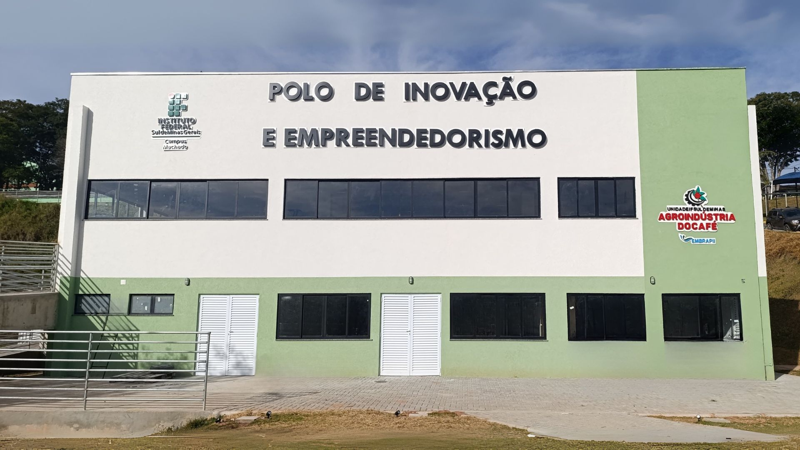

GAPE Pixel (Autobots)
Grupo voltado para design digital, multimídia, UX/UI, web e produção de materiais científicos.
Esta página foi estruturada para apresentar os quatro projetos principais da instituição, com um layout objetivo para organizar informações, imagens e descrições de cada iniciativa.
Grupo voltado para design digital, multimídia, UX/UI, web e produção de materiais científicos.
Cada divisão abaixo já está pronta para receber imagem e descrição detalhada da equipe.
Objetivos: fomentar o estudo e a pesquisa em design digital e multimídia, criando um ambiente para produção de artigos, TCCs e outros materiais científicos, além de ampliar a troca de conhecimentos entre alunos do Médio/Técnico e Superior em frentes como design gráfico, animação digital, UX/UI e produção audiovisual. Como ser membro: a seleção de novos membros ocorre por chamada pública para estudantes do IFSULDEMINAS - Campus Machado. Atividades desenvolvidas: estudos e pesquisas em Webdesign, programação para Web e Marketing Digital, com projetos alinhados às demandas internas do campus.

2. Espaço Maker e Impressão 3D O Laboratório IFMaker funciona sob o conceito de "aprender fazendo" (hands-on), sendo um ambiente multidisciplinar para prototipagem rápida. Recursos Disponíveis: Impressoras 3D, máquinas de corte a laser (CNC), plotters de recorte e microcontroladores (ESP32 e Arduino). Aplicações: Desenvolvimento de carcaças para dispositivos IoT, protótipos de produtos inovadores e peças personalizadas para projetos acadêmicos.

O Polo EMBRAPII no IFSULDEMINAS - Campus Machado é voltado para pesquisa, desenvolvimento e inovação no setor cafeeiro. Essa parceria gera muitas oportunidades para o campus ao unir duas frentes fortes no cenário local: tecnologia e agricultura.
Projeto iniciado em 2019 e cadastrado na plataforma da SBC para promover Tecnologia da Informação, Computação e áreas correlatas, incentivando o interesse e a participação de mulheres na área. Coordenação: Daniela Augusta Guimarães Dias (daniela.dias@ifsuldeminas.edu.br). Local de funcionamento: Setor II - Laboratório. Área de atuação: Pesquisa e Extensão. Público-alvo: discentes e professoras dos ensinos fundamental, médio, técnico e superior, além de profissionais da área. Como ser membro: o ingresso acontece por convites anuais e divulgação nas turmas do Técnico em Informática Integrado ao Ensino Médio, do Bacharelado em Sistemas de Informação e demais cursos do Campus Machado. Atividades desenvolvidas: oficinas, minicursos, palestras, publicação de pesquisas, relatos de experiências e competições, entre outras iniciativas.
As iniciativas selecionadas ampliam a formação dos estudantes em diferentes dimensões.
Espaço para apresentar indicadores e resultados de cada divisão.
Use este fluxo para organizar a inscrição dos estudantes em cada projeto.